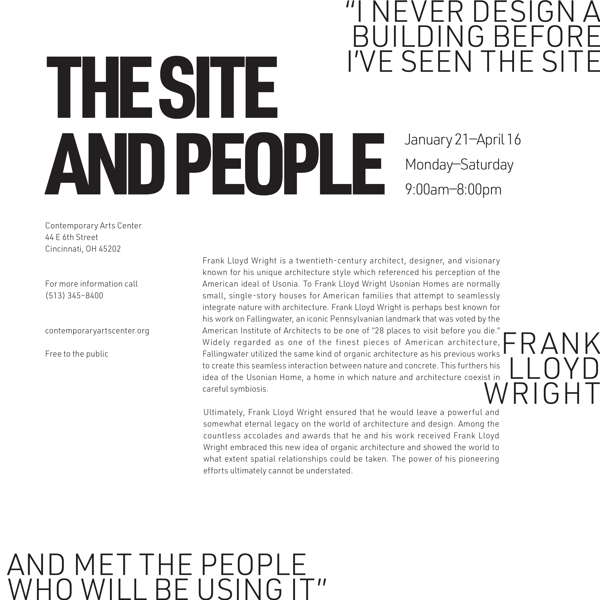
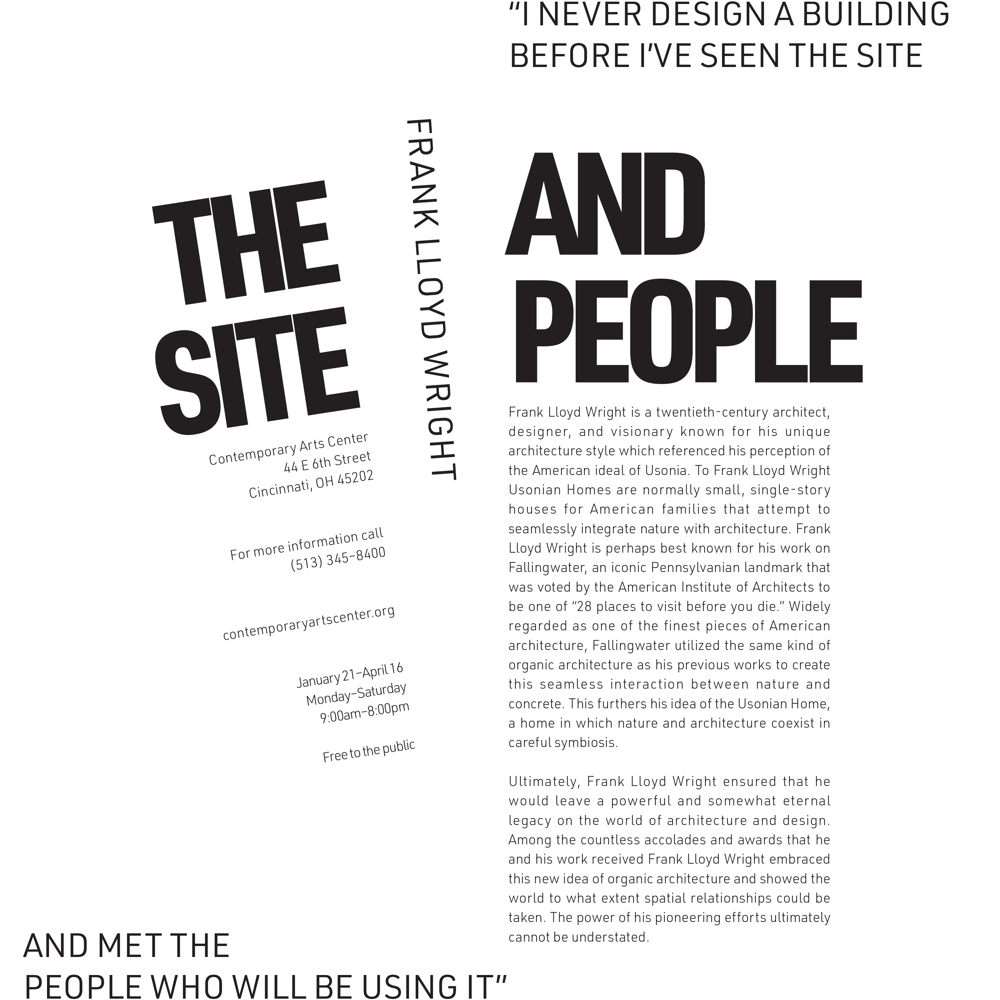
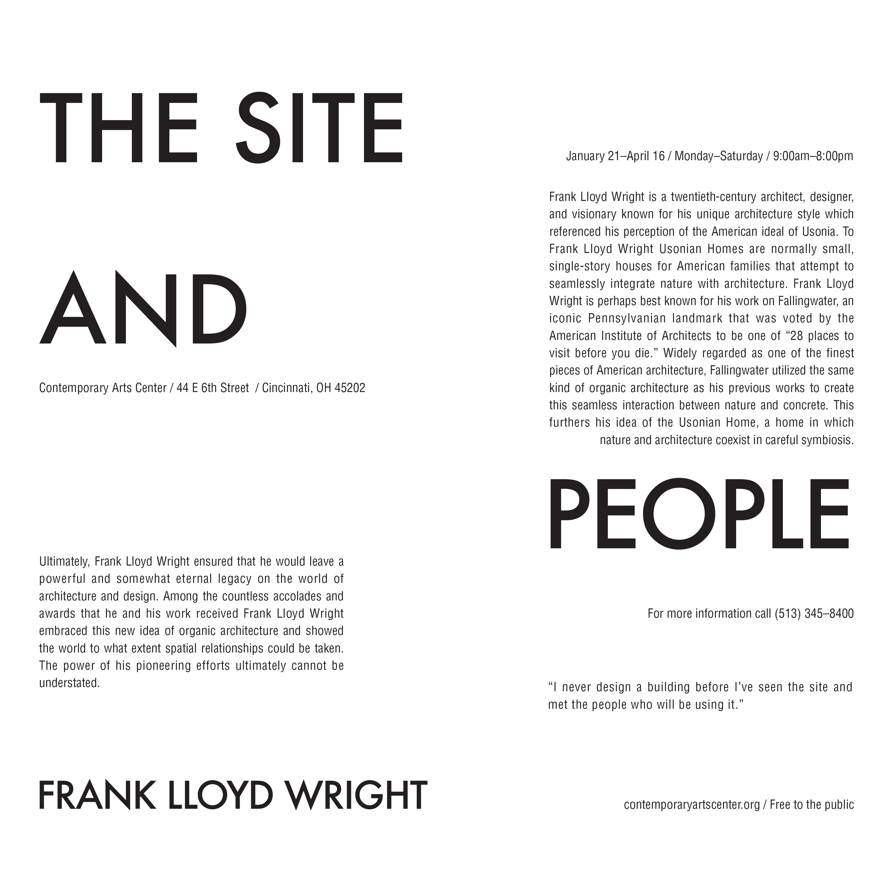

Typographic Composition
The Typographic Composition project is an exercise in laying type within an eight inch square. The primary goals of the project are typographic hierarchy and overall adherence to a graphical system. The project took the form of four distinct study series titled A, B, C, and D. Each series employed different, varrying levels of restrictions on font size, font weight, diversity of fonts, color, and more. The final delieverable for this project was a series of ten compositions, with three 'A' studies, three 'B' studies, three 'C' studies, and one 'D' study.